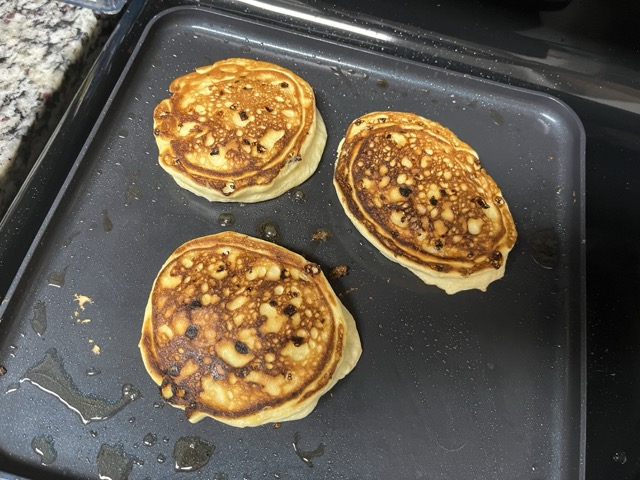

Home
Cloud Pancakes

Description
Perhaps a better name for these is "pan-souffles".
Ingredients
- 2/3 cup flour
- 6 eggs, separated
- 2 cups cottage cheese
- 1/8 tsp kosher salt
- 2 Tbsp sugar
Directions
- Mix cottage cheese, egg yolks, salt, sugar and flour in a bowl.
- In a separate bowl, beat egg whites to medium peaks.
- Fold egg whites into flour and cottage cheese mixture.
- On a griddle over med-high heat, coat with melted butter and drop 1/3 cup of batter for each pancake. Flip when it begins to turn golden brown, about 60-90 sec.